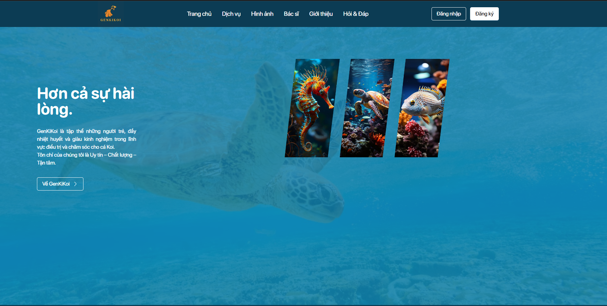
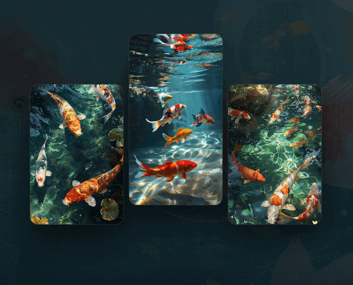
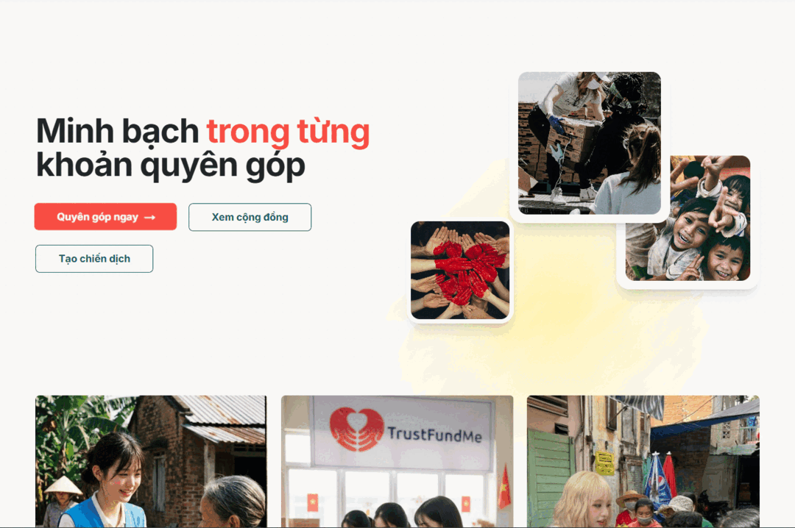
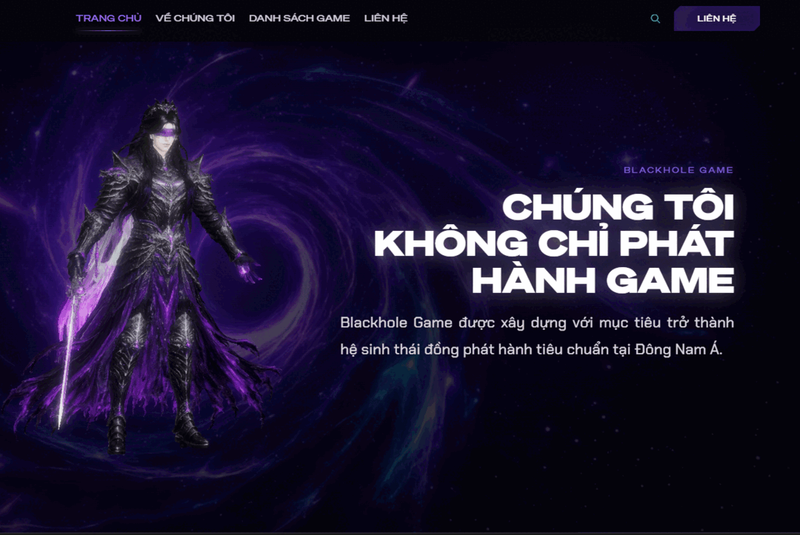
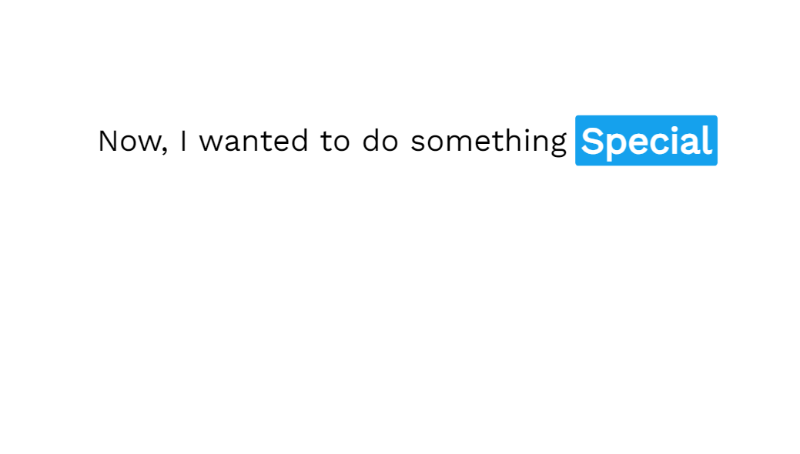
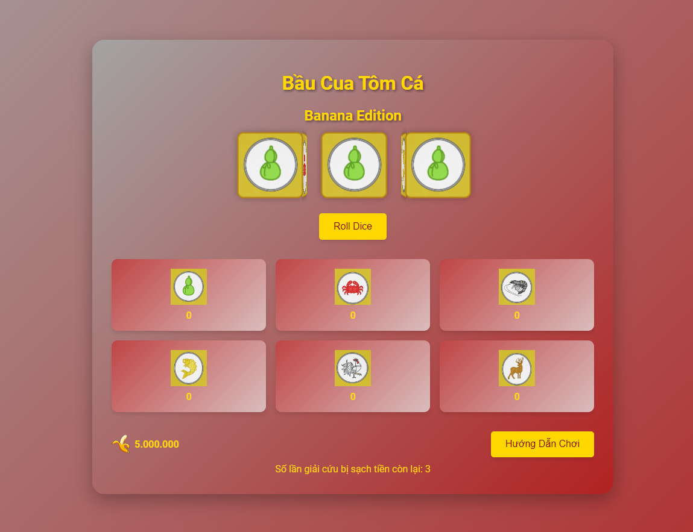
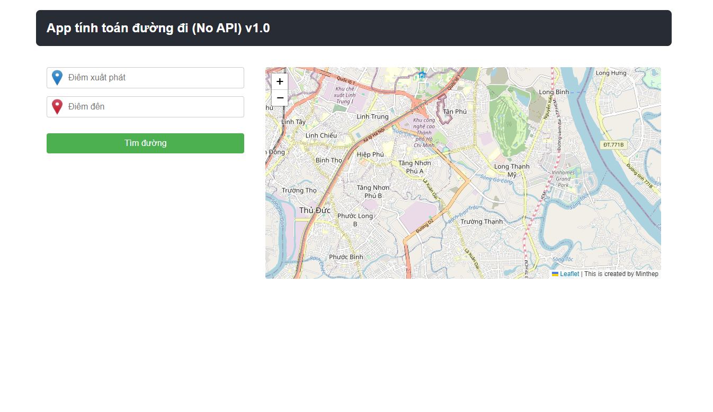
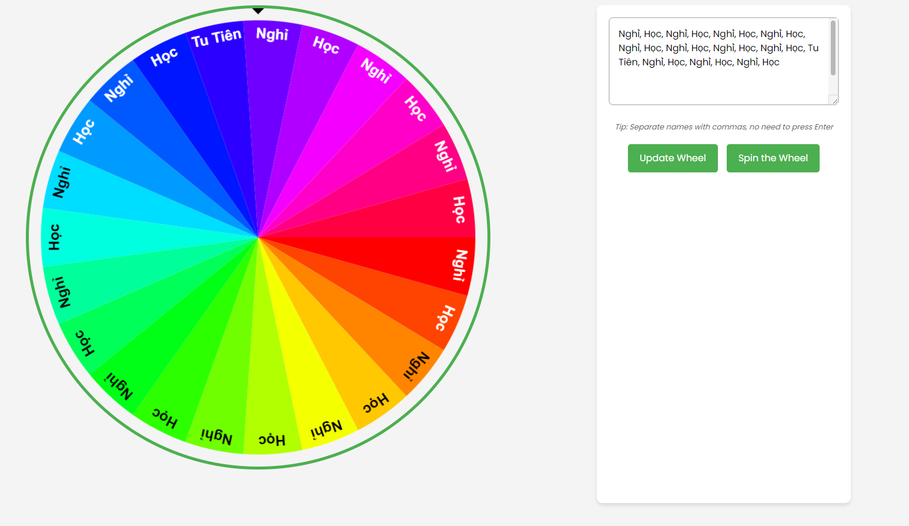

Genkikoi
Nền tảng thú y full-stack. 5 module nghiệp vụ, ship trong 3 tháng.
- Loại
- Full-Stack
- Vai trò
- Dẫn dắt nhóm 4 người
- Công nghệ
- React · TypeScript · Express · MongoDB
- CI/CD
- GitHub Actions
Bộ kỹ năng
34 mục · 6 nhóm
Ngôn ngữ
Framework & Thư viện
Database & Cloud
DevOps & Công cụ
Quản lý dự án
Ngoại ngữ
Dự án


Nền tảng thú y full-stack. 5 module nghiệp vụ, ship trong 3 tháng.

Hệ thống microservices gây quỹ. 8+ service, thanh toán VietQR real-time qua webhook, kèm app Flutter.

Website studio game. Cuộn kể chuyện, 3D thời gian thực.
Bộ sưu tập ảnh idol, lưới masonry và chuyển cảnh viết tay.




Hành trình
01/2026 – 03/2026
FPT Software · Full-time
12/2024 – 07/2025
FPT Software · Full-time
09/2022 – 05/2026
Đại học FPT · GPA 8.1/10 · Xếp loại Giỏi
01/2026
Microsoft & LinkedIn · Prompt Engineering, Responsible AI
01/2026
05/2024
LearnQuest / Coursera
03/2024
University of Michigan / Coursera
Hợp tác
Phổ biến
Phát triển Web Full-Stack React/Next.js + Node.js/Spring Boot. Từ 0 đến khi ship.Vì sao chọn tôi
Thép chủ động, code sạch và bàn giao đúng hạn, làm việc cùng rất nhẹ đầu.
Minh AnhĐồng đội dự án
Tư duy hệ thống tốt, dựng microservices và tích hợp thanh toán chỉ trong vài sprint, vượt mong đợi.
Quốc BảoQuản lý dự án
Nắm yêu cầu nhanh, làm đúng và giao đúng. Hợp tác qua nhiều dự án đều rất yên tâm!
Hoàng N.Khách hàng
Trước khi nhắn
Sáu câu hay được hỏi.
Bạn chỉ cần điền form liên hệ bên dưới để chia sẻ thông tin dự án, tôi sẽ phản hồi trong thời gian sớm nhất.
Tôi nhận phát triển web full-stack, backend/microservices, app mobile (Flutter) và hỗ trợ phân tích nghiệp vụ (BA).
Có. Tôi làm việc remote linh hoạt và quen với quy trình Agile/Scrum cho cả dự án trong và ngoài nước.
React/Next.js, Node.js, Spring Boot, Flutter, cùng MongoDB/MySQL, Docker và CI/CD qua GitHub Actions.
Tùy quy mô và phạm vi, tôi sẽ ước lượng timeline cụ thể và chốt mốc bàn giao ngay khi nắm rõ yêu cầu.
Hơn 30 dự án: web, backend, mobile — cả solo lẫn dẫn nhóm.
Bước tiếp theo
Đang nhận dự án mới. Làm remote, trong và ngoài nước.
Nhắn qua LinkedIn Facebook · @thepp.tan GitHub · thepKz
Muốn báo lỗi nội dung hay yêu cầu gỡ tư liệu thì mở một issue — mình phản hồi trong 48 giờ.